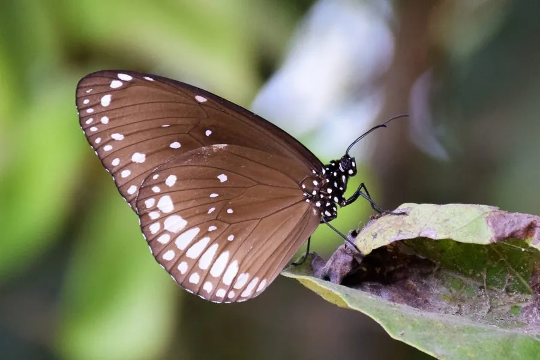

昆虫 · 动物界
幻紫斑蝶 Euploea core

翅面黑褐色、在光线下泛紫蓝色光泽的斑蝶，幼虫取食夹竹桃科植物并储存毒素，是著名的有毒蝶类。
- 分类
- 门节肢动物门纲昆虫纲目鳞翅目科蛱蝶科属紫斑蝶属
- 栖息环境
- 林缘、灌丛、花园与海岸林，夹竹桃科植物附近
- 地理分布
- 中国南方、东南亚、南亚和澳大利亚
- 保护级别
- 暂无评估
物种志
幻紫斑蝶翅展约 8–9 cm，翅面黑褐色，在阳光下会泛出紫蓝色光泽，前翅和后翅边缘有一排白色小点，后翅中央常有浅色斑。雌雄花纹差别不大，雌蝶体型略大，翅色稍淡。
它生活在林缘、灌丛和花园，成虫飞行缓慢，喜欢访花，常成群活动。雌蝶把卵产在夹竹桃科植物如夹竹桃、鸡蛋花的叶片上，幼虫取食后把毒素储存在体内，成虫和幼虫对鸟类都有毒，黑紫色的体色和缓慢的飞行姿态都是警戒信号。幻紫斑蝶分布于中国南方、东南亚、南亚和澳大利亚，是紫斑蝶类中分布较广的一种，也参与南方著名的斑蝶越冬群。它的蛹为银灰色，带有金属光泽，挂在寄主植物的枝叶间。
形态与习性
- 食性幼虫取食夹竹桃科植物；成虫吸食花蜜
- 翅展约 8–9 cm
- 识别翅面黑褐，光线下泛紫蓝色光泽，边缘有白点
- 防御幼虫储存夹竹桃科毒素，成虫有毒
- 分布中国南方、东南亚、南亚和澳大利亚
趣味知识
- 幻紫斑蝶的翅膀在光线下会泛出紫蓝色的金属光泽。
- 它的幼虫取食夹竹桃科植物，把毒素储存在体内。
- 紫斑蝶会参加南方山谷里的斑蝶越冬群，数量可达上万只。